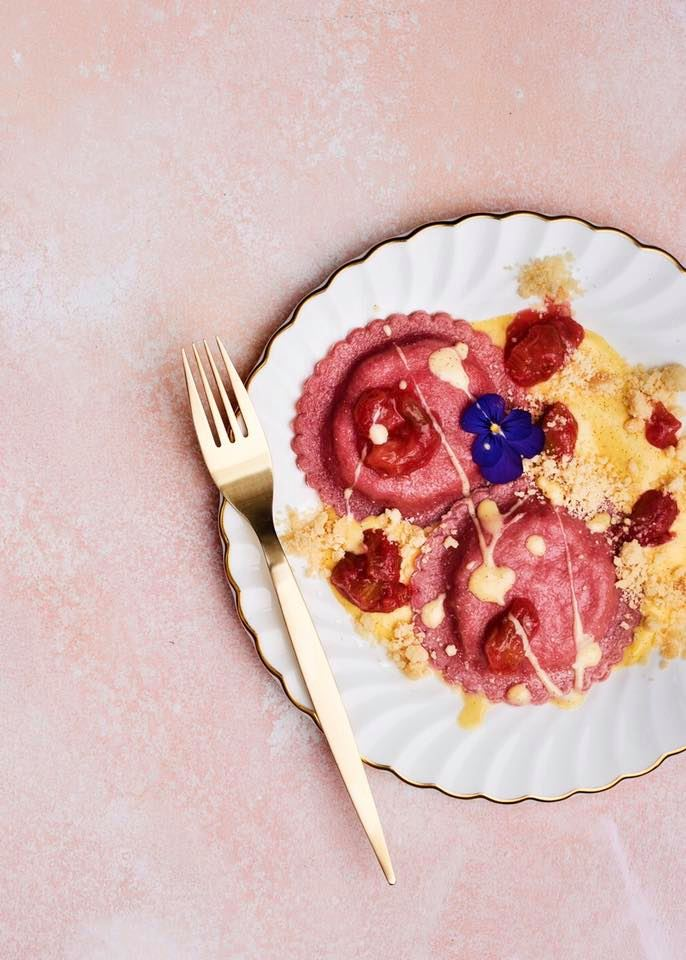
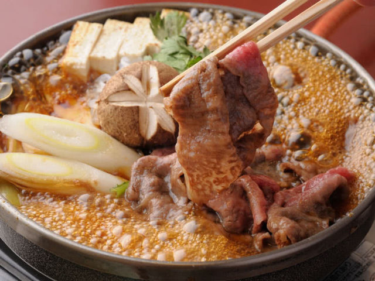
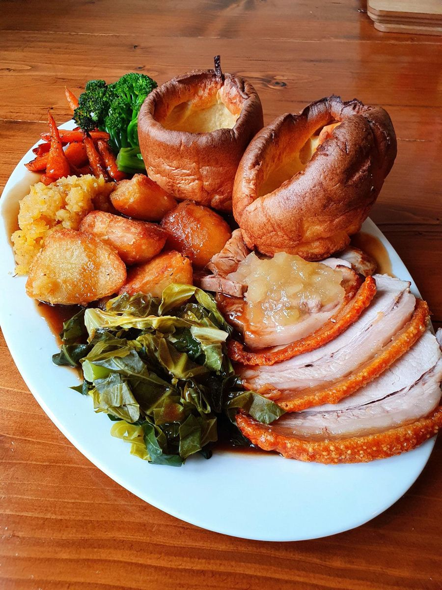

The most exquisite dishes:
-

- Rhubarb and Custard Ravioli - pretty pink parcels filled with rhubarb, served on vanilla custard, topped with rhubarb compote and crumble 
- Japanese beef "hot pot" - Sukiyaki (すき焼き) is a popular Japanese hot pot dish prepared and served at the table. It consists of well-marbled beef, alongside vegetables, tofu, and mushrooms that are slowly simmered in a shallow cast-iron pot. The soup broth is rich and bursting with sweet, salty, and savory flavor.
- Indian butter chicken - Butter chicken, traditionally known as murgh makhani, is an Indian dish originating in Delhi. It is a type of curry made from chicken with a spiced tomato and butter sauce. Its sauce is known for its rich texture.
- Beef bourgignon - French beef stew braised in red wine, often red Burgundy, and beef stock, typically flavored with carrots, onions, garlic, and a bouquet garni, and garnished with pearl onions, mushrooms, and bacon. 
- Traditional Roast Dinner - whatever meat you fancy be it pork with crackling, chicken, beef, gammon or turkey this dish isn't complete without the yorkshire puds, roast potatoes, cauliflower cheese, stuffing, veg, and gravy